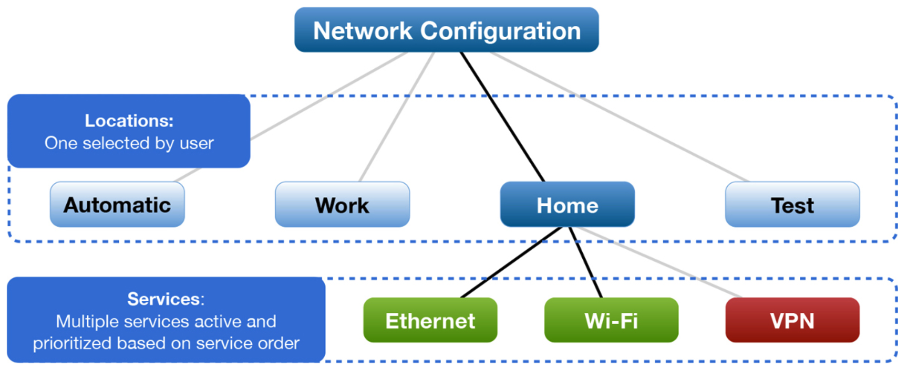
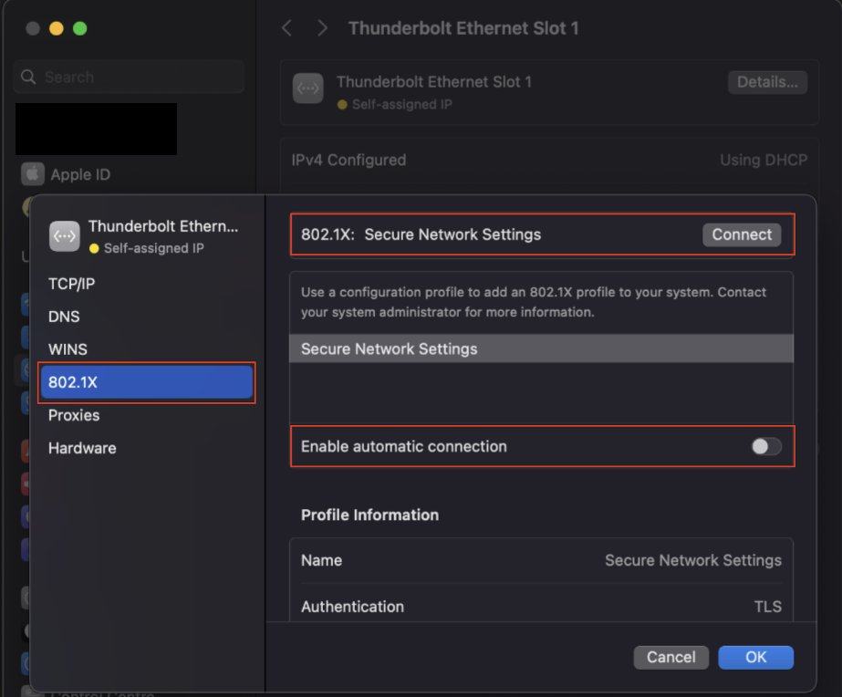
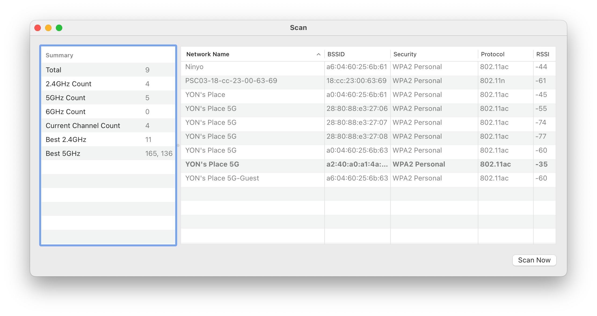
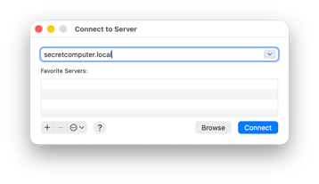
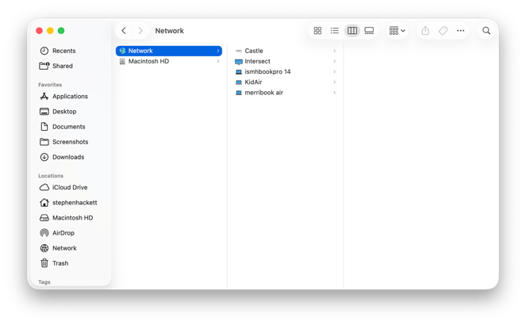
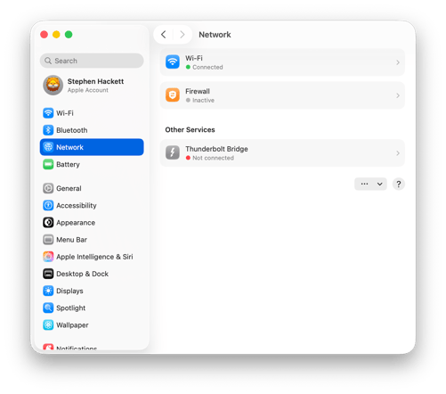
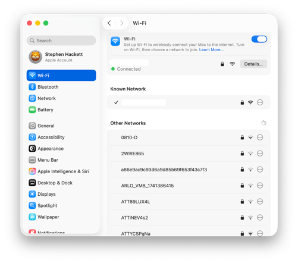

שיעור 09: רשתות¶
מדריך עזר לתלמיד
מטרות השיעור¶
- ממשקים וסדרי עדיפויות - ניהול מיקומי רשת (Network Locations) ו-Service Order.
- אבחון Wi-Fi מתקדם - שימוש ב-
Option + Clickובכלי ה-Power Tools של Wireless Diagnostics (Scan,Performance,Sniffer). - כלי אבחון בסיסיים וטרמינל - Ping, Traceroute, DNS Flush והיכרות עם פקודת העל
networksetup. - חומת האש (ALF) והדילמה הארגונית - מנגנון ה-Application Firewall, מצב Stealth Mode, ומדוע ארגוני Enterprise עם EDR מנטרלים אותו.
- תיבול ארגוני - אבחון פרופילי Wi-Fi מסוג 802.1X ארגוני וחיבורי VPN פרוקסי פרוסים מרחוק.
🎧 סקירה (פודקאסט)¶
מושגים ומונחי יסוד (Terms & Concepts)¶
| מושג | הסבר |
|---|---|
| מיקום רשת (Network Location) | פרופיל המאגד בתוכו את כלל הגדרות הרשת (כתובות IP, שרתי DNS, ופרוקסי). מאפשר לעבור במהירות בין תצורת "בית", "משרד" ועוד, ללא שינוי ההגדרות בפרופיל אחר. |
| סדר עדיפויות (Service Order) | הסדר שבו המק מחפש ומתחבר לרשתות פנויות. ניתן לגרור שירות (למשל Ethernet מעל Wi-Fi) להעדפת חיבור קווי. |
| Wireless Diagnostics | אפליקציית אבחון אלחוטי מובנית ב-macOS הכוללת כלי עומק (Scan, Performance, Sniffer) לניתוח ערוצים, הפרעות RF ולכידת פקטות. |
| RSSI (Received Signal Strength) | עוצמת האות האלחוטי ב-dBm (סקאלה שלילית: 30- dBm מעולה, 67- dBm סף מומלץ לארגונים/VoIP, 80- dBm ומטה חלש מאוד). |
| Noise (רעש רקע) | עוצמת רעשי הרקע האלקטרומגנטיים ב-dBm (90- dBm ומטה מצוין; 75- dBm ומעלה מעיד על הפרעה קשה, למשל מ-USB 3.0 לא מסוכך). |
| SNR (Signal-to-Noise Ratio) | יחס אות לרעש: חישוב של Signal - Noise (למשל 40dB = (90-) - 50-). מעל 25dB נחשב לחיבור יציב ואיכותי. |
| BSSID (Basic Service Set ID) | כתובת ה-MAC הפיזית של ה-Access Point / ראוטר הספציפי שאליו המק משודר כרגע. |
| Tx Rate | קצב השידור המקסימלי בפועל (ב-Mbps) המושג כרגע בין כרטיס הרשת במק לנקודת הגישה. |
| חומת אש (Firewall - ALF) | חומת האש המובנית ב-macOS הפועלת ברמת האפליקציה (Application Layer, שכבה 7). שולטת אילו אפליקציות רשאיות לקבל חיבורים נכנסים (Inbound). |
| מצב "חמקן" (Stealth Mode) | מונע מהמק להגיב לבקשות סריקה ברשת (כמו ICMP Ping). המק הופך "רואה ואינו נראה" עבור מחשבים אחרים ברשת. |
| Network Extension Framework | התשתית המודרנית של אפל (מחליפת ה-KEXTs) המאפשרת לתוכנות אבטחה (EDR, VPN, ZTNA) לסנן ולנטר תעבורת רשת נכנסת ויוצאת. |
| פרופיל 802.1X | מנגנון אימות מתקדם לארגונים (WPA-Enterprise). מסופק לרוב כ-Configuration Profile (פיילוד מה-MDM) המגדיר אוטומטית תעודות (Certificates). |
| Proxy ו-VPN | כלים לניתוב או הצפנת התעבורה. במחשב מנוהל (MDM), הגדרות אלו לרוב נפרסות כ-Payload שאינו ניתן לשינוי על ידי המשתמש. |
חלק 1 — ממשקים, סדרי עדיפויות (Service Order) ומיקומי רשת¶
- מיקומי רשת (Network Locations): פרופילים מבודדים המאפשרים להחליף את כל מערך הגדרות הרשת (DNS, IP, פקדי פרוקסי) בלחיצת כפתור אחת (למשל מעבר מ"משרד" ל"בית").
- סדר עדיפויות (Service Order): המערכת מנתבת תמיד את תעבורת ברירת המחדל דרך הממשק הפעיל שנמצא בראש הרשימה. אם מחוברים גם ל-Ethernet וגם ל-Wi-Fi — יש לוודא שהממשק הרצוי (לרוב החיבור הקווי) גורר לראש הרשימה תחת
System Settings > Network > ... > Set Service Order.
חלק 2 — אבחון רשת אלחוטית מתקדם (Wireless Diagnostics)¶
אפליקציית Wireless Diagnostics (הממוקמת ב-/System/Library/CoreServices/Applications/) היא אחת מנקודות העוצמה הנסתרות של macOS. מעבר לאשף האוטומטי, כוחה האמיתי טמון בכלים המקצועיים הזמינים בתפריט Window העליון.
📶 קיצור העל: Option + Click על סמל ה-Wi-Fi¶
החזקת מקש Option (⌥) ולחיצה על סמל ה-Wi-Fi בשורת התפריטים חושפת תמונת מצב חיה ללא פתיחת שום תוכנה:
* IP Address & Router: כתובת ה-IP המקומית וכתובת ה-Default Gateway.
* BSSID: כתובת ה-MAC הפיזית של ה-Access Point הספציפי שאליו המק מחובר כרגע.
* Channel: הערוץ, התדר (2.4GHz, 5GHz, 6GHz) ורוחב הפס (20/40/80/160 MHz).
* RSSI (עוצמת אות): סקאלה שלילית ב-dBm (30- dBm מעולה, 67- dBm סף מומלץ לארגון, 80- dBm ומטה חלש מאוד).
* Noise (רעש רקע): סקאלה שלילית עמוקה יותר (90- dBm ומטה מעולה; 75- dBm מעיד על הפרעה קשה).
* Tx Rate: קצב השידור המקסימלי בפועל (ב-Mbps) מול הראוטר.
🪟 כלי העזר בתפריט Window ב-Wireless Diagnostics¶
כאשר פותחים את Wireless Diagnostics, התעלמו מהאשף הרגיל וגשו ישירות לתפריט Window:
| חלון עזר | קיצור | שימוש מעשי ותועלת לטכנאי |
|---|---|---|
| Scan (סריקה) | Cmd + 4 |
סורק את כל נקודות הגישה בסביבה ומציג טבלה מפורטת (SSID, BSSID, ערוץ, רוחב פס, הצפנה ועוצמה). בסרגל הצד מוצגות המלצות חכמות (Best Channels) לערוצים הפנויים והמומלצים ביותר ב-2.4GHz וב-5GHz! |
| Performance (ביצועים) | Cmd + 5 |
גרף ויזואלי המתעדכן בזמן אמת ומציג שלושה מדדים במקביל: Rate (קצב ב-Mbps), Signal (אות ב-dBm) ו-Noise (רעש). מושלם להליכה במשרד לאיתור שטחים מתים (Dead Zones) ובדיקת נדידה (Roaming). |
| Sniffer (רחרחן אלחוטי) | Cmd + 6 |
לוכד את כל הפקטות האלחוטיות (Over-The-Air) בערוץ וברוחב פס נבחרים ישירות לקובץ .pcap (לניתוח מעמיק ב-Wireshark). |
| Info (מידע) | Cmd + 1 |
תצוגה מרוכזת של החיבור הנוכחי, מהירות, מצב אבטחה וחישוב SNR (Signal - Noise). |
חלק 3 — חומת האש (ALF) והדילמה הארגונית¶
חומת האש המובנית של macOS פועלת בשכבת האפליקציה (Application Layer Firewall - ALF) ומנוהלת על ידי התהליך socketfilterfw.
🛡️ עקרונות פעולת ה-ALF:¶
- חסימה נכנסת בלבד (Inbound Only): ה-ALF שולט אך ורק על תוכנות המבקשות לפתוח Listening Sockets ולקבל חיבורים מבחוץ. הוא אינו מנטר או חוסם תעבורה יוצאת (Outbound).
- חתימות קוד אוטומטיות: אפליקציות חתומות כדין על ידי מפתח מורשה של אפל מאושרות אוטומטית ללא פופ-אפים מיותרים.
- מצב חמקן (Stealth Mode): מונע מהמק להגיב לבקשות ICMP (Ping) וסריקות פורטים, מה שהופך את המק ל"בלתי נראה" ברשתות ציבוריות.
🏢 הדילמה הארגונית: ALF מובנה מול תוכנות אבטחה ו-EDR צד-שלישי¶
ארכיטקטורת אבטחה בארגון: להפעיל או לנטרל את ה-ALF?
בסביבות ארגוניות מתקדמות המריצות כלי EDR / SASE / ZTNA מודרניים (כגון Microsoft Defender for Endpoint, CrowdStrike Falcon, Palo Alto GlobalProtect, Cisco Secure Client, או Zscaler), ההמלצה הרשמית של היצרניות היא לנטרל את ה-Firewall המובנה של אפל דרך ה-MDM.
הסיבות לנטרול ה-ALF בארגוני Enterprise:
1. מניעת התנגשויות ב-Network Extension Framework: סוכני האבטחה המודרניים יושבים באותה נקודת סינון בדיוק כמו socketfilterfw. הרצה כפולה יוצרת מאבק על ה-Sockets (Stack Contention), עכבת כפולה (Double-Inspection Latency), איבודי פקטות (Packet Drops) וניתוקי VPN אקראיים.
2. מקור אמת יחיד (Single Source of Truth) ל-SIEM: ה-ALF המובנה אינו מעביר דיווחים מרכזיים (Syslog/SIEM) על חסימות. צוותי ה-SOC והאבטחה מעדיפים שסוכן ה-EDR ינהל 100% מתעבורת הרשת (הן Inbound והן Outbound) עם טלמטריה מלאה.
3. בארגונים קטנים ללא EDR ייעודי: ה-ALF הוא קו ההגנה הבסיסי ויש להשאירו מופעל (יחד עם Stealth Mode) כדי להגן על המק ברשתות ציבוריות.
חלק 4 — פקודות טרמינל מתקדמות וכלים (Terminal Commands)¶
Warning
הפקודה networksetup היא ה"אולר השוויצרי" לניהול רשת. רוב הפקודות המשנות תצורה דורשות הרשאות מנהל (sudo).
← ה-Firewall מתנהל על ידי socketfilterfw שרץ כ-Daemon תחת launchd — נלמד בשיעור 08 (Terminal). אפשר לעקוב אחריו ב-Console בדיוק כמו אחרי כל Daemon אחר.
1. הצגת מידע (ללא צורך בהרשאות)¶
# רשימת כל שירותי הרשת (שירות עם * מושבת)
networksetup -listallnetworkservices
# הצגת הגדרות IP/Subnet לשירות ספציפי
networksetup -getinfo "Wi-Fi"
# אחזור כתובת ה-MAC הפיזית
networksetup -getmacaddress "Ethernet"
# צפייה בשרתי DNS מוגדרים ידנית
networksetup -getdnsservers "Wi-Fi"
# הצגת כל מיקומי הרשת במערכת והמיקום הפעיל
networksetup -listlocations
networksetup -getcurrentlocation
2. שינוי תצורה ואיפוס (מחייב sudo)¶
# הגדרת כרטיס למשיכת IP מ-DHCP
sudo networksetup -setdhcp "Ethernet"
# הגדרת IP סטטי, Subnet, ו-Router
sudo networksetup -setmanual "Ethernet" 192.168.1.100 255.255.255.0 192.168.1.1
# הגדרת שרתי DNS (להחזרה לאוטומטי השתמש ב-empty במקום כתובות)
sudo networksetup -setdnsservers "Wi-Fi" 8.8.8.8 8.8.4.4
# מעבר מהיר למיקום רשת אחר (מחיל הכל מיידית)
sudo networksetup -switchtolocation "Office"
# איפוס וניקוי מלא של מטמון ה-DNS (DNS Flush)
sudo dscacheutil -flushcache; sudo killall -HUP mDNSResponder
3. כלי אבחון ובדיקה (Diagnostics)¶
| כלי / פקודה | ייעוד |
|---|---|
ping -c 4 apple.com |
שולח 4 בקשות ICMP לבדיקת זמינות וזמן תגובה (Latency). |
traceroute google.com |
מציג את כל הראוטרים/Hops בדרך ליעד לאיתור ניתוקים בניתוב. |
nslookup apple.com |
שאילתת DNS פשוטה לתרגום שם לכתובת IP. |
dig apple.com |
שאילתת DNS מקצועית ומפורטת לזמני מענה וסוגי רשומות. |
netstat -rn |
מציג את טבלת הניתוב (Routing Table) הפנימית של המערכת. |
lsof -i :80 |
מציג אילו אפליקציות ותהליכים מאזינים לפורט מסוים (למשל 80). |
קבצים ונתיבים שימושיים¶
| הנתיב | תיאור הקובץ |
|---|---|
/Library/Preferences/SystemConfiguration/preferences.plist |
קובץ התצורה הראשי של המיקומים והרשת. אדמינים מוחקים אותו לאיפוס מוחלט של הרשת במקרה תקלה. |
/Library/Preferences/com.apple.alf.plist |
קובץ ההעדפות של ה-Application Layer Firewall (ALF). |
קישורים מומלצים ולקריאה נוספת¶
- Use network locations on Mac - שימוש במיקומי רשת ב-macOS.
- Change Firewall settings on Mac - חומת האש המובנית.
- Connect to an 802.1X network - התחברות לרשת ארגונית.
- Deploy Wi-Fi payload settings for Apple devices - פריסת הגדרות MDM לרשתות.
🎬 סרטון סיכום¶
עזרים ויזואליים¶
המחשה ויזואלית (עזר לתלמיד)
תמונות אלו ממחישות את הממשק או המנגנון הרלוונטי לנושא השיעור.






